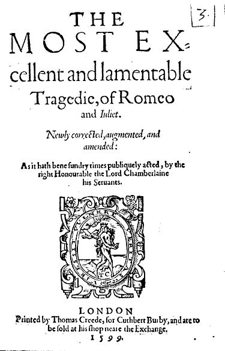
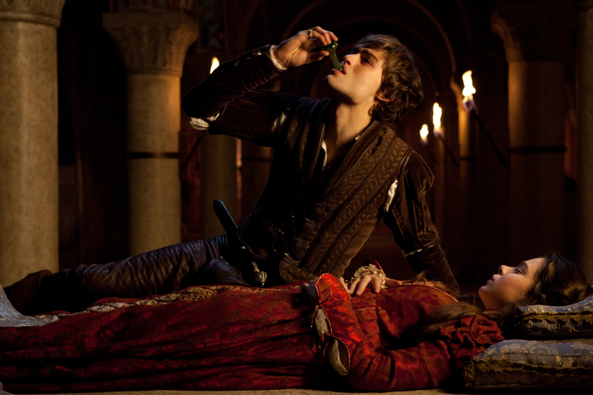
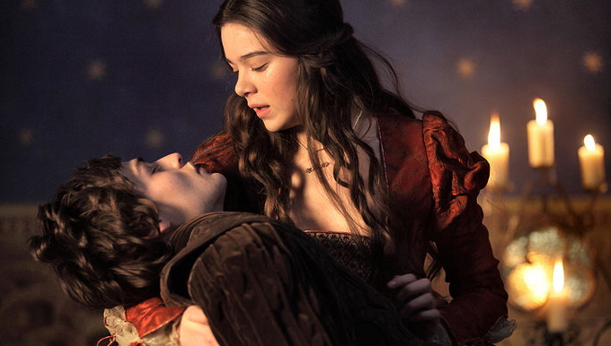

Протягом усієї трагедії головні персонажі роблять дивні та необдумані вчинки. Одним з таких є самогубство. Вони двоє загинули через кохання. Я не вважав би цю смерть смішною, якщо це, наприклад, була б самопожертва заради іншої людини. Але ні, це безпричинна смерть.
Премія Дарвіна є жартівливою онлайн премією лауреати, якої є на офіційному сайті darwinawards.com. Уявімо, що Ромео і Джульєтта реальні особи, чи відповідали б вони умовам цієї преміїї? Є 4 умови, щоб стати лауреатом, а саме відсутність нащадків, достовірність, оригінальність, самостійність.
Головні персонажі загинули в юному віці, тобто дітей не мали. Але хочу додати, що нащадків не буде мати взагалі весь рід, бо ні Ромео, ні Джульєтта рідних братів чи сестер не мають. Тібальт — двоюрідний брат Джульєтти помер через Ромео, коли заступився за свою двоюрідну сестру.
Ромео та Джульєтта вигадані особи, отже випадок достовірним бути не може, але є умова Уявімо, що Ромео і Джульєтта реальні особи
, тому цей пункт можна пропустити.
Двоє скоїли суїцид, що не є оригінальним, але важливим є те, за яких обставин вони це зробили.

Коли Ромео вбив Паріса, то він побачив похоронену Джульєтту. Він подумав, що вона мертва, тому вирішив, що його життя безсенсове і випив отруту, щоб загинути.

Але насправді Джульєтта прикидалась. І коли вона побачила уже дійсно мертвого Ромео, вона вирішила те саме, тому взяла його меч і себе ним проколола.
Смерті обох сталися через смішні і оригінальні причини, тому вони підходять виконали цей пункт.
Вони вбили самі себе і ніхто інший на це впливу не мав. Багато, хто скаже, що вони мали один на одного вплив, а отже це не самостійна, але цей вплив психологічний, а смерть має бути самостійною у фізичному плані.
Якщо Ромео і Джульєтта були б реальними людьми, які жили б після 1992 року (дати заснування премії Дарвіна), то вони стали би лауреатами цієї премії.